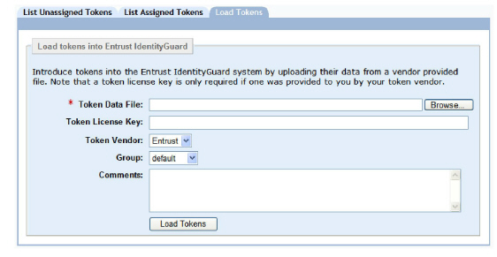
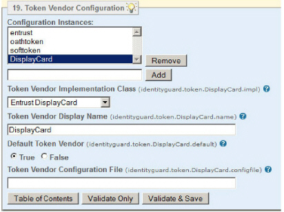
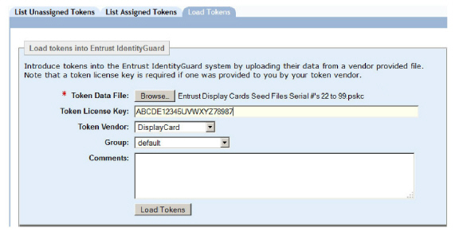
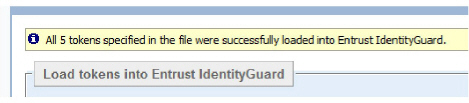

|
IdentityGuard Server 11.0 Administration Guide |
|
IdentityGuard Server 11.0 Administration Guide |
After you set up your token repository, as described in Store unassigned token information, you need to load the token data file into the repository.
When you load your token data file, Entrust IdentityGuard loads your tokens into the Entrust IdentityGuard repository. Any existing tokens with the same serial numbers are skipped.
Note: If your token file is very large, and you wish to avoid possible problems that might arise as a result of working over the network, copy the token data file or files to the server hosting Entrust IdentityGuard before continuing with this procedure. To avoid all difficulties with large token files, consider loading tokens using the Master user shell. See the Entrust IdentityGuard Master User Shell Command Reference for details about token load commands.
Complete the procedure for the type of tokens you have:
● To load the token data file — This procedure applies to Entrust Mini Tokens, and Entrust Pocket Tokens.
● To load the token data file for Entrust Display Card Tokens
1. Log in to the Entrust IdentityGuard Administration interface as the administrator.
 On the
Windows computer where Entrust IdentityGuard is installed
On the
Windows computer where Entrust IdentityGuard is installed
2. Click Tokens.
3. Click the Load Tokens tab.
The Load Tokens page appears.

4. Click Browse to locate the token data file. Common file extensions for Entrust tokens are .sds and .sdb.
5. In the Token License Key field, enter the license key, if required. Not all tokens require a license key.
6. In the Token Vendor list, select the token supplier, Entrust, or OATH token.
7. Assign the tokens to a group by selecting from the Group list. Normally, you load tokens into the same group as the users you plan to assign them to.
If you plan to assign the tokens to users in multiple groups, you must do one of the following:
● Move the tokens to the same group as the users before assigning them.
● Set the Move Tokens to User’s Group During Assignment policy. See To configure token policies.
8. Use the Comments field to enter information for the benefit of other administrators.
9. Click Load Tokens.
To load the token data file for Entrust Display Card Tokens
1. If you have not already done so, use the Properties Editor to configure a token vendor instance for Entrust DisplayCard. See To configure a new token vendor. Example settings for this token vendor:
● Configuration instance: DisplayCard
● Token Vendor Implementation Class: Entrust DisplayCard
● Token Vendor Display Name: DisplayCard
● Default Token Vendor: True or False, as required.

Remember to restart the Entrust IdentityGuard Server service after saving these properties.
2. Log in to the Administration interface.
3. Click Tokens.
4. Click the Load Tokens tab.
The Load Tokens page appears.
5. Click Browse to locate the token data file. Entrust DisplayCard seed files have the extension .pskc.
6. In the Token License Key field, enter both the IV number and the license key that you received, one after the other with no space in between. For example, the Display Card is delivered with the following information:
IV: ABCDE12345
Key: UVWXYZ78987
Enter both the IV and the Key in the Token License Key field as follows:
ABCDE12345UVWXYZ78987

7. In the Token Vendor list, select DisplayCard if it is not already set as the default.
8. Assign the tokens to a group by selecting from the Group list. Typically, you load tokens into the same group as the users you plan to assign them to.
If you plan to assign the tokens to users in multiple groups, you must do one of the following:
● Move the tokens to the same group as the users before assigning them.
● Set the Move Tokens to User’s Group During Assignment policy. See Configure token policies.
9. Use the Comments field to enter information for the benefit of other administrators.
10. Click Load Tokens.
A message like the following confirms that the tokens were loaded.
